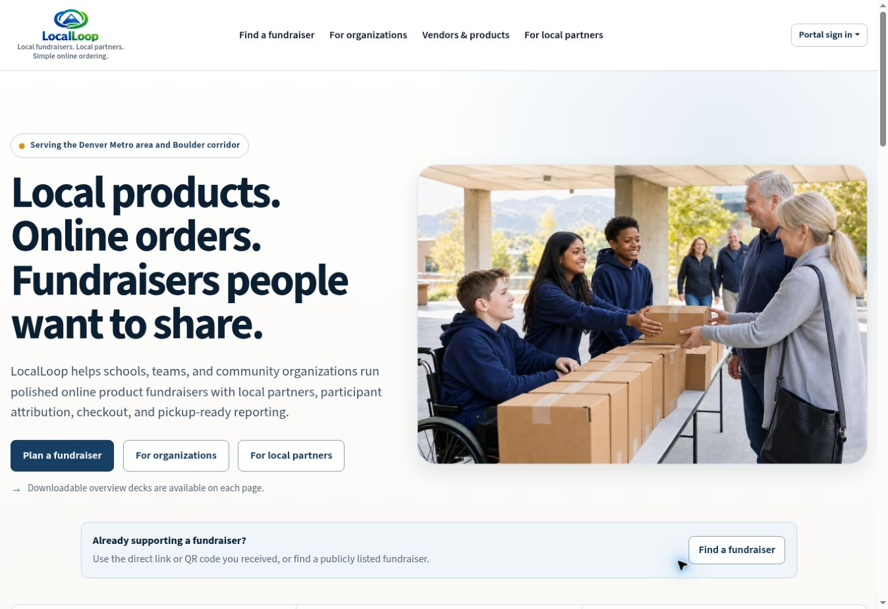
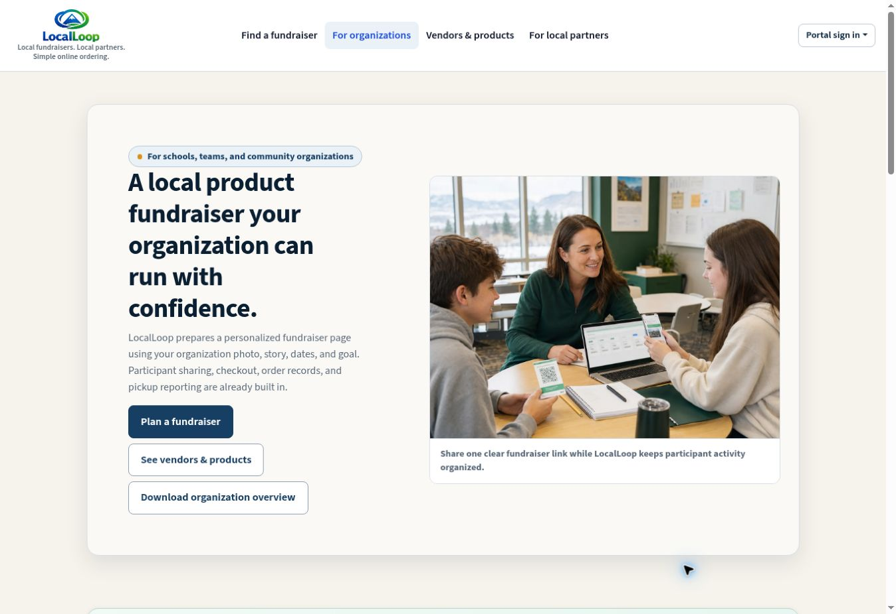
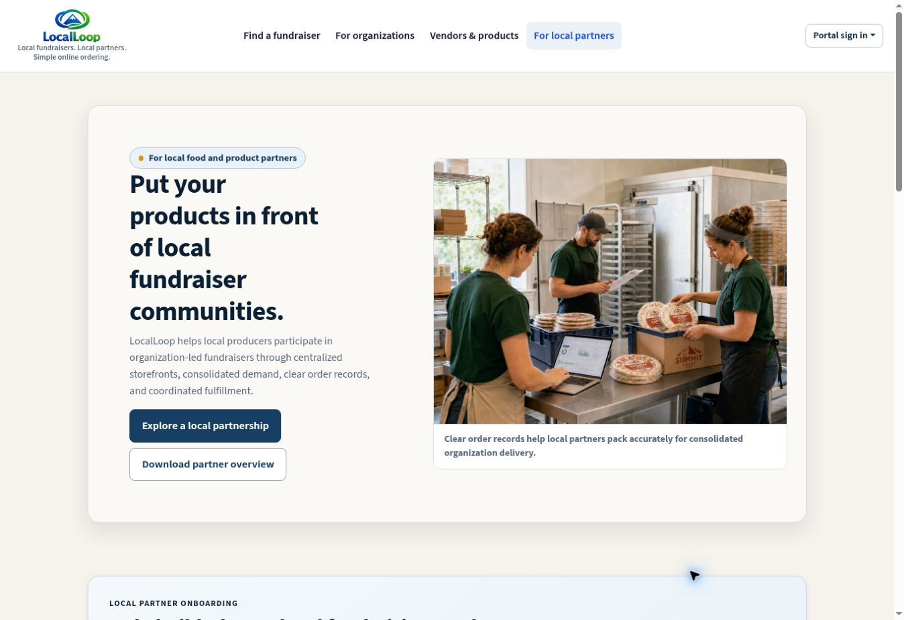
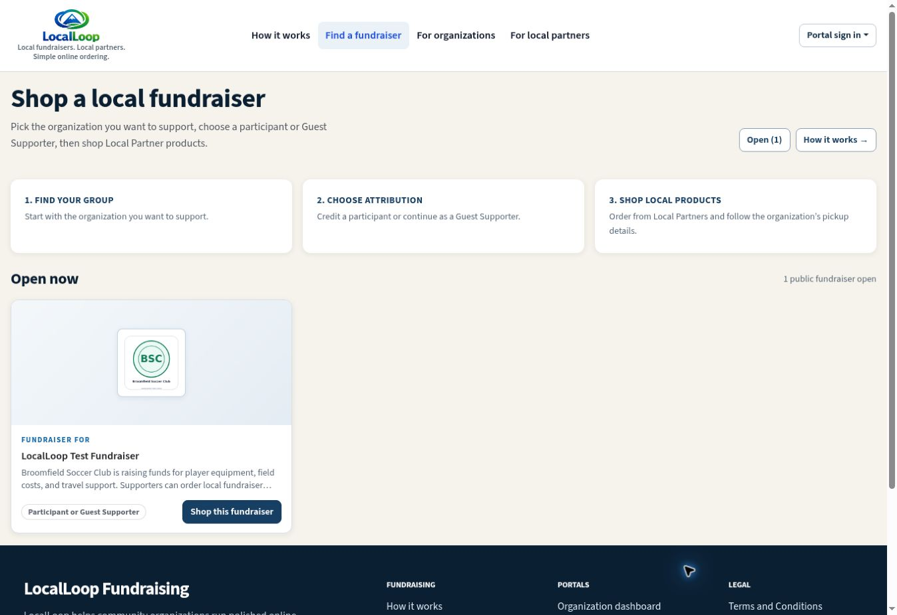
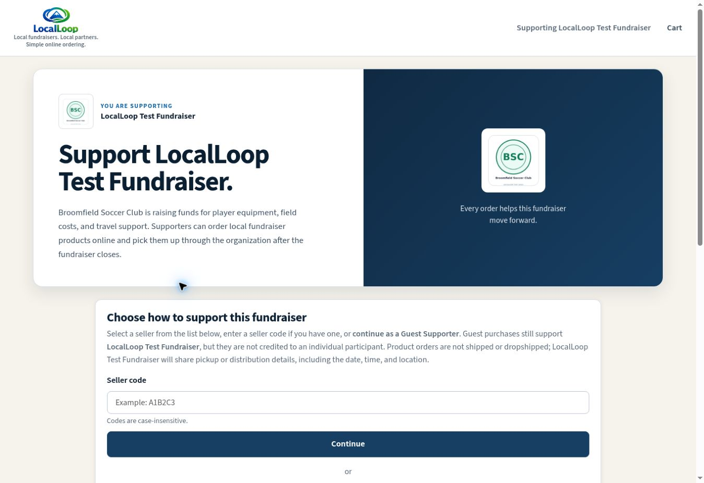
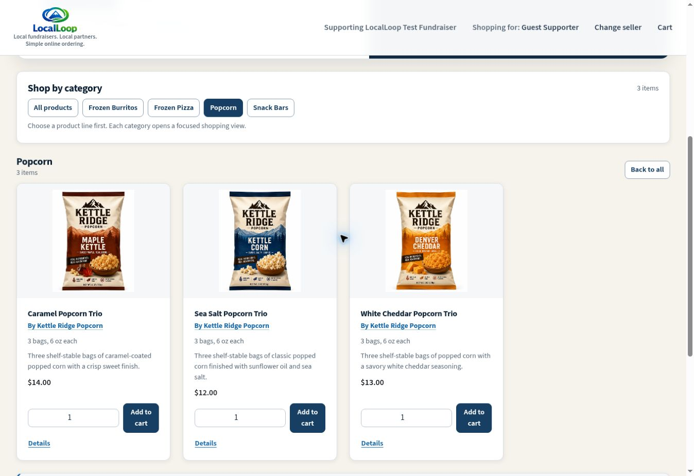

Founder-led platform
LocalLoop Fundraising
A web platform designed to help community organizations run local-product fundraisers with online ordering, participant attribution, and organized fulfillment.
- Role
- Founder, product owner, and developer
- Focus
- Product strategy, workflow design, application development, and operations
- Status
- Preparing initial programs in Colorado

The challenge
Fundraising workflows are often fragmented.
Traditional product fundraisers can require volunteers to manage paper order forms, participant credit, payment collection, product totals, and pickup coordination across disconnected tools.
Local producers also need clear demand, packaging expectations, consolidated quantities, and predictable handoff timing before a fundraiser is practical to support.
The solution
One workflow from setup through distribution.
I designed LocalLoop around the complete operating flow rather than treating it as a simple online catalog. Organizations receive a structured fundraiser, participants can receive order credit, supporters shop local partner products, and order records remain connected for closeout and distribution.
- Organization-specific fundraiser pages, goals, dates, and pickup details
- Participant selection, seller codes, and Guest Supporter attribution
- Local partner profiles, product categories, item details, and cart workflows
- Centralized order records for organization and partner fulfillment
- Role-specific experiences for administrators, partners, participants, and supporters
My contribution
Product thinking and technical execution.
As founder, product owner, and developer, I defined the business model, mapped the user roles, designed the operational workflows, built the application, and established the testing and onboarding process.
The work includes application architecture, data relationships, role-based workflows, public storefront design, payment and order logic, requirements, UAT, reporting needs, partner onboarding, and launch planning.
Product walkthrough
The experience in practice
These screens come from the live public product and a controlled test fundraiser. Names and product brands shown in the test flow are demonstration data.






Continue